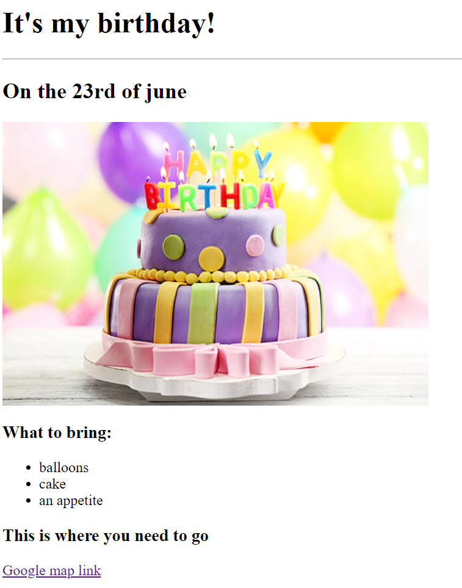
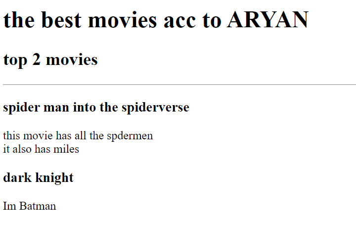

Welcome to my portfolio!
These are my current websites :-
Birthday invite project

This is a link to the above project
Movie ranking project

This is a link to the above project
Thank you for going through my projects!!
Here's how you can contact me and know more about me :)
contact
about